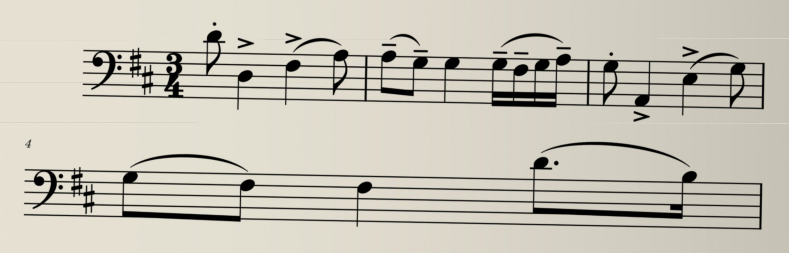
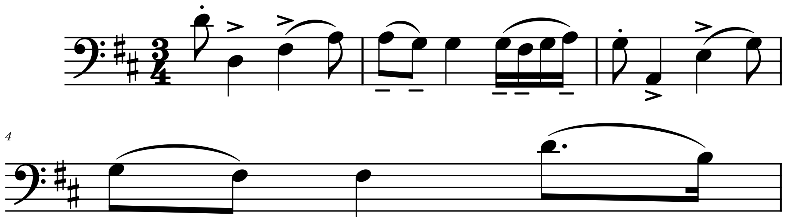

포트폴리오 · 종이 악보개인 프로젝트
사진 한 장을
악보 파일로

악보 파일

「하바네라」 1883년 판 · 사진 효과는 설명용 · 아래는 실제 판독
종이 악보 → 악보 파일개인 프로젝트
손으로 입력하던 악보를
사진에서 가져옵니다
악보로 변환 중
편집 예시 진행 중
예시 확인 완료
컴퓨터에서 고칠 수 있는 악보실제 파일 편집 예시


① 원래 음 듣기 ♪
② 한 칸 위로
③ 바뀐 음 듣기 ♪
음표를 바꾸면 재생되는 소리도 바뀝니다.
아래 ‘음표 바꿔 보기’에서 직접 비교할 수 있어요.
하바네라 원판 · 사진 효과와 처리 단계는 설명용
판독 파일의 첫 음만 편집 · 인식 오류는 남아 있음
판독 파일의 첫 음만 편집 · 인식 오류는 남아 있음
원본과 결과 비교어려웠던 점
사진과 나란히
맞춰 봤습니다
사진의 마지막 음표가 판독 결과에서 빠졌습니다. 그 음 하나를 채우는 예시입니다.
사진

AI 사진 인식 중
판독 결과 확인 중
빠진 음 보완 예시
보완 결과 확인 중
예시 확인 완료
위는 실제 판독 · 비교를 위해 두 악보의 간격 통일
아래는 빠진 음 하나를 직접 편집한 설명용 예시
아래는 빠진 음 하나를 직접 편집한 설명용 예시
종이 악보여러 번 읽기
여러 결과에서 골라
한 악보로 합칩니다
음 길이가 맞는 후보부터 추리고, 서로 더 많이 일치하는 결과를 마디마다 골라 합칩니다.
칸 하나 = 한 마디길이 맞음길이 부족
사진·칸·선택은 흐름 설명용 · 실제 판독 결과 아님
같이 틀릴 수도 있어 합친 뒤 원본과 대조합니다
같이 틀릴 수도 있어 합친 뒤 원본과 대조합니다
첼로 악보결과
실제 사진에서도
수정할 곳이 줄었습니다
별도 검증에 사용한 왈츠 첼로 파트입니다.
사진 3장 · 219마디 · 앞의 하바네라와 다릅니다.
사람이 손댈 마디219마디 중
처음36
지금5
비교 범위음높이·길이·붙임줄을 비교했습니다. 슬러·셈여림 등 연주 표시는 제외합니다.
남은 5마디여러 마디 쉼표 4마디 + 잘못 읽은 붙임줄 1마디. 원본과 대조해 손질합니다.
2026-10-25 개발 · 10-27 재현 기록
이번 데모 수정에서 전체 인식을 재실행한 수치는 아님
이번 데모 수정에서 전체 인식을 재실행한 수치는 아님